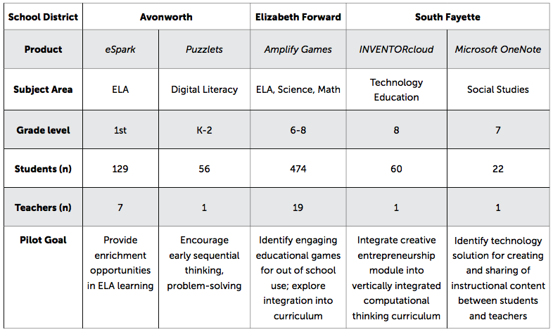
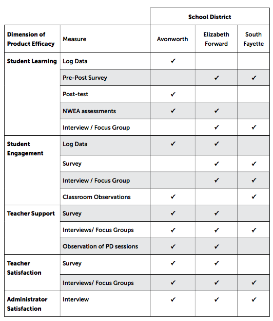

HealthApp
Overview
HealthApp is a design concept for a service connecting University Health Services staff with Carnegie Mellon students through transparency in information, built in communication tools and shared decision making. The design concept was based on in depth contextual inquiry research with relevant stakeholders. I worked on this project as part of a team of five students in User Centered Design and Research, Fall 2015.

Research Methods
This project used User Centered Research methods to collect qualitative data to understand all stakeholders that are involved within the University Health Services system both directly and indirectly- nurses and doctors on the front lines, students who have gone to health services frequently and others that have never been, residential life staff that have taken students to the center, and student leaders who help connect students to services and give workshops. As a team of five, we conducted open-ended interviews with stakeholders and used the data to map out multiple models of the CMU health care system from each perspective, and finally into consolidated models representative of the current state.
We found that many students at Carnegie Mellon University have had negative experiences with our client, University Health Services, due to inconsistent treatment options, unreasonable wait times, and lack of clear expectations.
Models
Based on our interviews, we created sequence, flow, cultural and value models of the situation from each stakeholder's perspective, before consolidating our models to capture the insights from all stakeholders.
Flow Models
We captured the flow of information between stakeholders based on contextual inquiry and interviews.


Cultural Models
We gained insight into the relationships between our stakeholders through cultural models.


Rebundled Models
As a step towards visioning opportunities for changing the way that the health service system operates, we used rebundling to reallocate the roles, responsibilities and tasks between the stakeholders.


Ideation
Using our models of the present and an envisioned future state, our team came up with over fifty ideas of solutions to address problems at multiple levels. Some of the ideas included a moving healthcare clinic, an app to check wait times before dropping by for services, a messaging system and a socially integrated health and fitness tracker. We chose elements of strongest ideas to dig deeper into through improvisational storyboarding, and finally chose a a small number of ideas to mock up as storyboards to test with stakeholders. Based on the storyboard testing, we came to our final concept- a design with nurse-facing and student-facing interfaces that allows students to communicate with their health care provider and maintains a tracking record of past experiences.


Best Practices for Teaching Online
Overview
I created an online course and supplemental pdf workbook on best practices for teaching online for internal and client use @ TechChange Institute for Technology and Social Change.
TechChange Instructional Design Fellow, Summer 2016
Purpose
The instructional design team at TechChange works with clients in international development, non-profits and healthcare to develop highly interactive e-learning courses. Increasingly, there is a need to support clients in using the TechChange platform to more independently develop courses that are well-designed from both an educational and interaction perspective.
Research
I synthesised research on designing educational experiences online from my own experiences teaching, working on past educational projects in school, as well as a comparative analysis of other e-learning curriculums.

Infographics
I created a over 10 diagrams to represent complex educational and e-learning concepts. I used a simple color palate and minimalist design to communicate the parallels between the various models of assessment, goals and design methodology.


Rapid Prototyping/Testing
LULA: Digital Sewing Machine
Overview
For this project, I redesigned an interface of a Sewing Machine. I have sewn since elementary school, but my past experience inspired the choice of device, I found that I could not rely on intuition as much as I would have thought. Before beginning any prototyping, I began by doing research on various types of sewing and embroidery machine interfaces, particularly looking for different ways that digital interfaces were integrated into the machine. I initially scoped my interface to include traditionally very physical components of the sewing machine, such as a “Start” button, a speed control and a tension control. However, through my lo-fi prototyping I found that these elements were most at odds with users preconceived models of how a sewing machine works. While there are actually existing sewing machines that have begun including foot-petal-free functionality, I decided that overcoming these issues were not feasible within the constraints of the project.
Process
Throughout my design process, I created over 10 prototypes at different levels of fidelity, user tested with over twenty users through a think-a-loud procedure followed by a brief heuristic evaluation. From each iteration, I recorded detailed User Aspect Reports that I used to consolidate findings and consider changes to the design, weighing tradeoffs with opportunities.
Lo-Fi Prototype
I began with a very simple paper prototype which I used primarily to gauge user reaction to the concept of a digital prototype, which allowed me to appropriately scope the functions that could and should be incorporated as part of the digital interface.
Key Findings:
- Expert vs. Novice experience significantly impacts perception of ease of use and willingness to accept "novel" design.
- Typically physical components such as start and stop buttons confuse users, does not with with mental model.
Digital Prototype
I used Illustrator to mock up both digital prototypes, and InVision to add interactivity, which was a mixed choice. As I was not designing an app or website, which Balsamiq is designed for, I chose Illustrator so that I would be unconstrained by the built in options in Balsamiq. This allowed me to create a functionally low-fidelity prototype that was visually medium/ high fidelity, which helped significantly in moving to the later high fidelity iterations.
Key Findings:
- Navigation style does not fit actual use.
- Troubleshooting panel seems acceptable, guide is excessive.
- Lack of dynamic feedback leaves users will minimal ability to visualize stitch
- Troubleshooting lack enough support, leaves users still wondering what/ how to fix their machine.
- Some screens lack sufficient backwards navigation.

Rapid Cycle Pilots: Improving Ed-Tech Products through Feedback
Overview
The Learning Media Design Center at Carnegie Mellon University collaborated with Digital Promise to support three Pittsburgh-area school districts (Avonworth, Elizabeth Forward, and South Fayette) in conducting effective short–cycle evaluations of courseware product pilots, and facilitating feedback-loop processes with participating Ed Tech companies (including Schell Games, InventorCloud, eSpark, MS OneNote) to improve product efficacy and learning. Our goal was to develop scalable assessment strategies that enable educational stakeholders to quickly gather the critical information and data needed to consider the adoption of new technology tools and courseware platforms in the classroom, and provide actionable feedback to developers.
Research Overview
We conducted interviews, consolidated data and facilitated observations as a Research Assistant for this research project. We worked with three school districts piloting five different ed-tech products to document, support and design recommendations for best practices in ed-tech piloting. In many ways, this project was a meta-experience, in that we were simulateneously evaluating edtech products while considering at a higher level the ways in which such products should be evaluated.* My name was not included as an author of the report due to a desire to only include the primary authors (Post-doc + Primary Investigator)
Case Studies
The three school districts that we worked with were Avonworth, Elizabeth Forward and South Fayette, each that were piloting two new educational technologies.
Research Questions
Given that we were tasked with supporting the pilot of five separate technoliges in three districts, we developed both technology-specific research questions that we ourselves would use to evaluate, as well as meta-questions about system level approaches that allowed us to evaluate across the different cases and have more universal insight. The table below shows the measured used to evaluate in each study.
Mindful: Exploring use of mHealth for Mental Health Support
Overview
Based on insight from clinicians, students and other stakeholders, we proposed a prototyped application that allows for consistent student practice of biofeedback and other prescribed behaviors as well as the sharing and utilization of the resulting data.
Research
Competitive Analysis
We explored existing technologies and services that support mental health professionals in using biofeedback techniques with clients.

Students
We collected input from over 40 students at Carnegie Mellon. We found that 50% have seen a mental health professional regularly, 33% have never, 66% have found benefits to using another health app before, 83% would “maybe” be willing to share health app information with a professional.
Health Professionals
We were able to talk to three professional psychologists who have experience working with college students and using biofeedback techniques. They revealed that:
- They would be interested in technology that focuses on mindfulness/reflection.
- They encourage clients to use biofeedback to support practice.
- They often encourage clients to track behaviors to give positive reinforcements through automatic feedback.
Insights
Through competitive analysis and expert interviews, we discovered some of the key pain points in the college mental health experience:
- Students get professional mental health services infrequently.
- Clinicians have limited ways of encouraging positive behavior after appt.
- Students are interested in learning more about their mental and physical health, but often lack the expertise in interpretation and reflection.
- Therapy sessions are focused on collaborative working together between therapist and student.
Wireframes

Home Page
Biofeedback Session with sunrise animation

Users can track their outcomes and create a report to share with clinicans.
Users can adjust goals and sharing preferences
Emotion reporting through simple visuals

Users can reflect through short written reflections
Weekly emails of reports can be sent to clinicians and family members
The final deliverable for this project was a short paper describing our research process, methods and findings.

Memento: Portfolio Based Networking
Overview
In this project, my team and I designed a portfolio-based networking tool for alumni and students to connect, as a service experience to promote the value of building communication skills inside and outside the classroom.
Our client was Carnegie Mellon University’s Simon Initiative, a group leading the design of a comprehensive, “one stop shop” to help students, administrators, faculty, and alumni with learning and teaching writing, reflection and leadership skills at CMU. We worked to understand the current social, economic, and technological factors surrounding writing, reflection, and leadership for students and alumni these days. Our goal in this project was to envision new services, apps, and platforms that leverage Carnegie Mellon’s expertise in people, existing resources, and potentially, data from separate sensors and/or service ecosystems into your new service or platform.
Service Design, Fall 2016
Research
We interviewed 21 stakeholders (students, faculty, staff, employers and alumni) on how they value communication skills and their experience using and learning communication skills at Carnegie Mellon. We chose to use an affinity diagram process to understand and organize our insights and reveal problems and tensions.

Current State Models
Based on our insights, we created a stakeholder model and journal map to document the student and professor experience learning communication skills.

Ideation and Testing
We brainstormed over 100 ideas and created over 20 storyboards to test with our stakeholders.

.jpg)
Future Service Models
In order to design our final service, we created a Service Blueprint and updated value flow model that capture the actions and value of stakeholders in the service.


Mentoring and Decision Aids
I am currently designing a chat-based tool for mentors to support mentee design making as part of an independent study based on research into peer mentoring and career decision making. More to come soon!


Educational Data Mining for Elementary French On-line: A Descriptive Study
I worked with Dr. Bonnie Youngs on a descriptive study focused on evaluating and testing the validity of student data produced from Elementary French 1 on the Online Learning Initiative (OLI) platform run internally by Carnegie Mellon University.
The goal of this project were to understand the relationship between student motivations and their actions within the online interface, as represented by the data produced from their actions.
Publication citation: Youngs, Bonnie, Sarah Moss-Horwitz, and Elizabeth Synder. "Educational Data Mining for Elementary French On-line: A Descriptive Study."Learners Interactions Online. N.p., Apr. 2015. Web. http://calico.org/LearnerInteractionsOnline.pdf